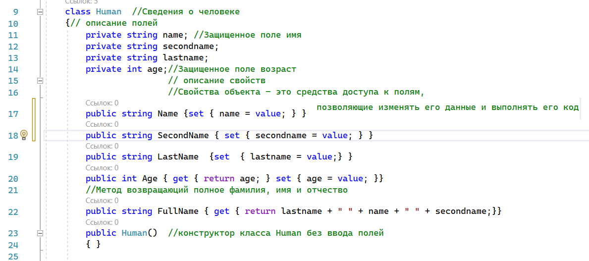
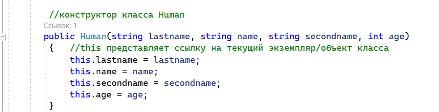
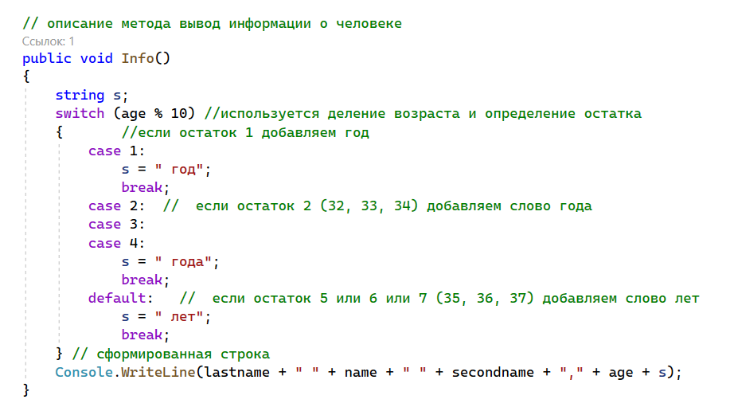
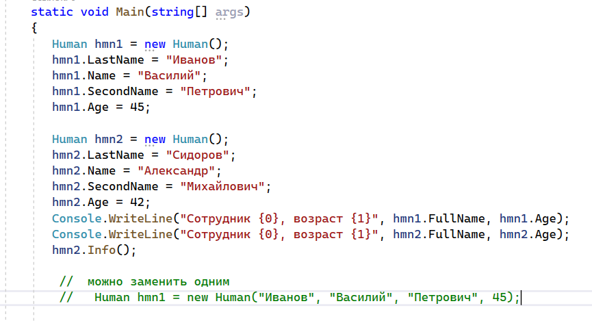
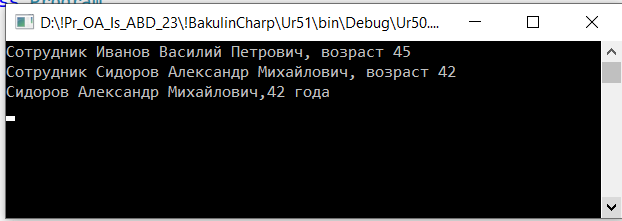

| Тема 1. Создания класса Human. | ||
| Назад | ||
|
Рассмотрим пример создания класса Human. В качестве полей будем использовать фамилию, имя, отчество и возраст сотрудника. Для их хранения будем использовать поля lastname, name, secondname, age. Для работы с этими полями создадим свойства LastName, Name, SecondName, Age. Первые три будем использовать только для ввода, а последнее - и для ввода, и для чтения. Кроме того, опишем свойство FullName, которое будет выводить полное имя сотрудника. Создадим метод Info(), суть которого будет заключаться в выводе на консоль данных о сотруднике. Получим следующий код, который нужно разместить в теле класса Human:  Конструкторы класса Рассмотрим подробнее оператор Human hmn1 = new Human(); Его можно разбить на два оператора Human hmn1; hmn1 = new Human(); Первый из них предназначен для описания переменной hmn1 типа Human, а второй представляет собой вызов функции Human(), результат выполнения которой присваивается переменной hmn1. Эта функция называется конструктором данного класса, и ее назначение – создание нового экземпляра этого класса. Здесь мы использовали конструктор по умолчанию, который присутствует в каждом классе. Как видим, имя конструктора совпадает с именем класса, и конструктор по умолчанию не имеет параметров. Конструктор – это метод класса. Как любой метод, его можно перегрузить, т.е. создать другие реализации конструктора, отличающиеся количеством параметров или их типом. Количество перегрузок может быть любым. Обычно параметры используются для инициализации всех или части полей класса. Описание конструктора аналогично описанию других методов. Единственное отличие – его имя совпадает с именем класса и у него не определен тип. Добавим в класс конструктор
 Создадим метод Info(), суть которого будет заключаться в выводе на консоль данных о сотруднике.  // описание полей
private string name;
private string secondname;
В процедуру Main() запишем следующий код  Создали два экземпляра объектов hmn1, hnm2. Полям этих объектов присвоили соответствующие значения. Затем данные по первому объекту вывели непосредственно в процедуре Main(), а для вывода данных по второму объекту использовали метод Info(). В результате после выполнения кода получим строки Сотрудник Иванов Василий Петрович, возраст 45 Сидоров Александр Михайлович, 42 года В описании конструктора мы использовали имена формальных параметров, совпадающие с именами полей. Поэтому, чтобы их отличить было необходимо к именам полей добавить слово this., которое подчеркивает, что это поле класса. Можно было для формальных параметров использовать другие имена. Тогда необходимость в слове this. отпадает. Заметим, что при введении конструктора с параметрами конструктор без параметров аннулируется. Если мы хотим сохранить этот конструктор, то следует описать его реализацию в виде public Human()
{
}
Теперь, после описания конструктора с параметрами, первые пять операторов в процедуре Main() Human hmn1 = new Human();
hmn1.LastName = "Иванов";
hmn1.Name = "Василий";
hmn1.SecondName = "Петрович";
hmn1.Age = 45;
можно заменить одним
Human hmn1 = new Human("Иванов","Василий","Петрович",45);
После выполнения кода мы получим тот же самый результат, который указан выше.
 В новом варианте программы мы для создания объекта hmn1 используем конструктор с параметрами, а для создания объекта hmn2 – конструктор без параметро в |
||
| Конспект подготовлен Бакулиным А. М. 2022 год. | ||